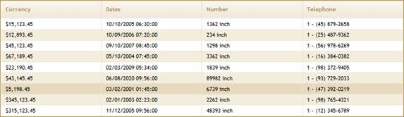

Grid uses Format() method for formatting the column. This Format() method format both bound columns and unbounds column data. In bound columns, it formats only the column values where as unbound columns it formats the column by records.
Bound Columns
1. Create a model in the application (Refer to How to>Creating the Generic Collection Model and How to>AutoFormattingClass).
2. Create a strongly typed view (Refer to How to>Strongly Typed View).
3. In the view, you can use its Model property in Datasource() to bind the data source.
|
View [ASPX]
<%=Html.Syncfusion().Grid<AutoFormatting>("FormatGrid") .Datasource(Model) .ShowCaption(false) .ShowRowHeader(false) .AutoFormat(Skins.Sandune) %> |
|
View [cshtml]
@{ Html.Syncfusion().Grid<AutoFormatting>("FormatGrid") .Datasource(Model) .ShowCaption(false) .ShowRowHeader(false) .AutoFormat(Skins.Sandune) .Render(); } |
4. Specify the format for columns using the Format() method.
|
View [ASPX]
<%=Html.Syncfusion().Grid<AutoFormatting>("FormatGrid") .Datasource(Model) .ShowCaption(false) .ShowRowHeader(false) .AutoFormat(Skins.Sandune) .Column( column => { column.Add(c => c.Currency).HeaderText("Currency").Format("{0:$###,###.##}"); column.Add(c => c.Dates).HeaderText("Dates").Format("{0:MM/dd/yyyy hh:mm:ss}"); column.Add(c => c.Number).HeaderText("Number").Format("{0:# inch}"); column.Add(c => c.Telephone).HeaderText("Telephone").Format("{0:1 - (###) ###-####}"); }) %> |
|
View [cshtml]
@{ Html.Syncfusion().Grid<AutoFormatting>("FormatGrid") .Datasource(Model) .ShowCaption(false) .ShowRowHeader(false) .AutoFormat(Skins.Sandune) .Column( column => { column.Add(c => c.Currency).HeaderText("Currency").Format("{0:$###,###.##}"); column.Add(c => c.Dates).HeaderText("Dates").Format("{0:MM/dd/yyyy hh:mm:ss}"); column.Add(c => c.Number).HeaderText("Number").Format("{0:# inch}"); column.Add(c => c.Telephone).HeaderText("Telephone").Format("{0:1 - (###) ###-####}"); }).Render(); } |
5. Run the sample. The grid will look like the following screenshot.

Figure 205: Grid with Formatting
UnboundColumn
Refer to more information regarding the formatting of unbound columns in Data Binding>Unbound Columns.